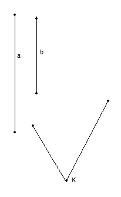
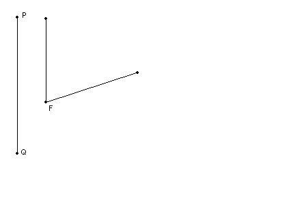

| 1. | Construct a triangle has two sides congruent to the given line segments a and b and where the included angle is equal in measure to the angle K. |

| 2. | (a) | Construct a triangle which has two sides both equal to the given line segment PQ, and where the angle between them has the same measure as the angle F. |
| (b) | What is the exact name of the type of triangle drawn in this construction? |
